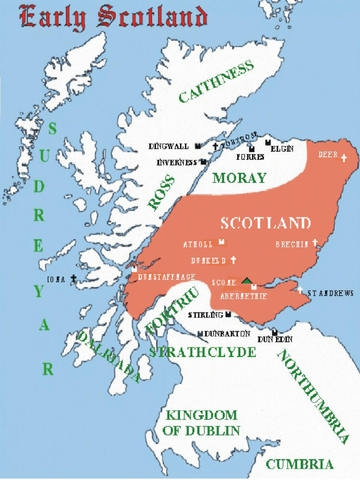

Kung av Scotland 1005-1034. Blev högst 80 år.
954 Dunkeld, Perth and Kinross, Scotland. [1]
1034 Glamis Castle, Angus, Scotland. [1]
WIKIPEDIA
Máel Coluim mac Cináeda (modern gäliska: Maol Chaluim mac Choinnich[1], känd i moderna angliciserade regnallistor som Malcolm II; död 25 november 1034),[2] var kung av skottarna från 1005 till sin död. [3] Han var son till Cináed mac Maíl Coluim; Bercháns profetia säger att hans mor var en kvinna från Leinster och hänvisar till honom som Máel Coluim Forranach, "förstöraren". [4]
Till de irländska annalerna som registrerade hans död var Máel Coluim ard rí Alban, högkung av Skottland. På samma sätt som Brian Bóruma, högkung av Irland, inte var den enda kungen i Irland, var Máel Coluim en av flera kungar inom det moderna Skottlands geografiska gränser: hans medkungar inkluderade kungen av Strathclyde, som styrde mycket av sydväst, olika norsk-gaelkungar på västkusten och Hebriderna och, närmaste och farligaste rivaler, kungarna eller Mormaers of Moray. I söder, i kungariket England, kontrollerade earlerna av Bernicia och Northumbria, vars föregångare som kungar av Northumbria en gång hade styrt större delen av södra Skottland, fortfarande stora delar av sydost.